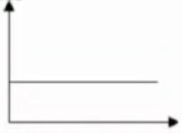
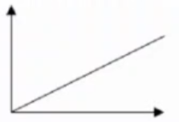
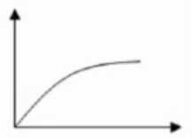
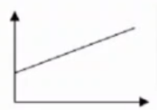
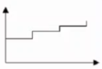

Ejercicios tema 2🔗
Ejercicio 4 - costes variables🔗
Clasificar los costes de una consultoría según su variabilidad
| Concepto | Tipo |
|---|---|
| Consumos de material de oficina e informático | Fijo |
| Sueldos y seguridad social del personal de administración y dirección | Fijo |
| Dietas de los consultores en sus visitas a los clientes | Variable |
| Descuentos comerciales concedidos a clientes | No es un coste, es menor importe de venta |
| Dietas del director general | Fijo |
| Costes de locomoción | Variable |
| Gas | Semivariable (igual se puede considerar Variable porque la parte fija es despreciable) |
| Subcontratación de estudios a terceros | Variable |
| Publicidad | Fijo |
| Electricidad | Semivariable |
| Teléfono | Semivariable, Realmente depende de la tarifa telefónica |
| Página Web | Fijo |
| Servicios de prensa | Fijo |
| Sueldos y seguridad social de los consultores | Semifijo |
| Sueldos por horas extras de los consultores | Variable |
| Costes varios | Fijo |
| Alquiler | Fijo |
| Amortización ordenadores | Fijo |
Ejercicio 5 - representación gráfica de costes🔗
- Amortización del edificio lineal en 35 años.
 - Sueldos de los trabajadores contratados a través de empresas de trabajo temporal (ETT)
 - Materias primas consumidas sobre las que se practica un rappel. El porcentaje del rappel se incrementa en función del volumen
 - Salarios de lo strabajadores con remuneración constante en función de la producción, con salario mínimo.
 - Amortización del utillaje.

Ejercicio 6 - umbral de rentabilidad🔗
Datos:
- Costes fijos = 12.000.000
- Unidades vendidas = 34.000.000
- Precio de venta = 2
- Costes variables = 1.6
\(Umbral\; de\; rentabilidad = \dfrac{12.000.000}{2-1.6}=30.000.000\)
\(Margen\; de\; seguridad = ventas - umbral = 34.000.000 - 30.000.000 = 4.000.000\)
\(Beneficio = 34.000.000 \cdot 2 - (12.000.000 + 34.000.000 \cdot 1.6) = 1.6000.000\)
\(Beneficio / Margen = 1.600.000 / 4.000.000 = 0.4\)
Ejercicio 7 - umbral de rentabilidad empresa multiproducto🔗
Datos:
- Costes fijos = 9.6000.000
- Unidades vendidas de A = 9.000.000
- Precio venta A = 3
- Costes variables A = 1.8
- Unidades vendidas de B = 6.000.000
- Precio venta B = 2
- Costes variables B = 1.4
Calculamos la proporción de unidades vendidas de cada uno de los productos:
- A: \(9.000.000/15.000.000=0.6\)
- B: \(6.000.000/15.000.000=0.4\)
\(Umbral\; de\; rentabilidad = \dfrac{9.600.000}{0.6(3-1.8)+0.4(2-1.4)}=10.000.000\)
Deberá fabricar y vender un total de 6.000.000 unidades de A y 4.000.000 unidades de B.
Ejercicio 8 - umbral de rentabilidad. Beneficios esperados🔗
Datos:
- Costes fijos = 18.000.000
- Umbral de rentabilidad = 90.000.000
Calcular el beneficio que obtendríamos con unas ventas de 110.000.000 unidades.
\(umbral = \dfrac{CF}{P_V-C_V}=50.000=\dfrac{18.000.000}{P_V-C_V}\rightarrow P_V-C_V=0.2\)
\(beneficio = 110.000.000 P_V - (18.000.000 + (P_V-0.2)110.000.000\)
\(beneficio = 0.2\cdot 110.000.000 - 18.000.000 = 4.000.000\)
Ejercicio 9 - Clasificación directos e indirectos🔗
Clasificar los costes de una consultoría en directos e indirectos.
| Concepto | Tipo |
|---|---|
| Consumos de material de oficina e informático | Indirecto |
| Sueldos y seguridad social del personal de administración y dirección | Indirecto |
| Dietas de los consultores en sus visitas a los clientes | Directo |
| Descuentos comerciales concedidos a clientes | No es un coste, es menor importe de venta |
| Dietas del director general | Indirecto |
| Costes de locomoción | Indirecto |
| Gas | Indirecto |
| Subcontratación de estudios a terceros | Indirecto |
| Publicidad | Directo / Indirecto, depende de si el coste se identifica co nun producto directamente. Normalmente directo. |
| Gastos financieros | Indirecto |
| Electricidad | Indirecto |
| Teléfono | Indirecto |
| Página Web | Indirecto |
| Servicios de prensa | Indirecto |
| Sueldos y seguridad social de los consultores | Directo |
| Sueldos por horas extras de los consultores | Directo |
| Costes varios | Indirecto |
| Alquiler | Indirecto |
| Amortización ordenadores | Indirecto |
Ejercicio 10 - Imputación de costes indirectos🔗
Determinar el precio de venta de cada lavado si los accionistas exigen un margen mínimo del 10% de las ventas.
Note
- El agua se mete como
coste indirectoporque sabemos cuánto agua consume cada lavado exactamente. - Las amortizaciones suelen ser
coste indirecto.
| Concepto | Coste por lavado |
|---|---|
| Costes Directos Materiales | \(0.3+0.6+0.2=1.1\) |
| Costes Directos Mano de obra | \((22.000+8.000)/1.500*0.5=10\) |
| Costes Indirectos | \((2.200+4.300+8.700+6.000)/2.800=7.57\) |
| Coste por lavado | 18.67 |
| Precio de venta | 18.67*1.1=20.54 |
Ejercicio 11 - Imputación de costes indirectos🔗
La empresa fabrica botellas para envasar vino en un centro único.
Datos:
- Se usa una máquina que funde el vidrio, otra que hace botellas normales y otra botellas magnum.
- Se han fabricado
125.000botellas normales y60.000magnum. - La botella normal lleva
200gde vidrio y la magnum245g. - El precio del vidrio es de
0.8€/Kg. - El coste de la mano de obra es de
8€/h. - La botella normal tarda
1.2minutos en hacerse y la mangum0.3minutos más. - Se pagan
647.500€por alquileres (el20%son oficinas y el resto la fábrica). - La máquina de fundición se amortiza en
101.000€, la máquina que hace botellas normales480.000€y la que hace botellas magnum360.000€. - En cuanto a servicios exteriores se pagan
601.250€(el20%son oficinas y el resto la fábrica).
Determine el precio de venta de los productos si la empresa desea establecer un margen industrial del 50%.
| Costes directos | Normal | Magnum |
|---|---|---|
| Materia prima | \(0.8\cdot0.2=0.16\) | \(0.8\cdot0.425=0.34\) |
| Mano de obra directa (\(8/60=0.133\)) | \(0.1333\cdot1.2=0.16\) | \(0.1333\cdot1.5=1.2\) |
| Amortización de maquinaria | \(480.000/125.000=3.84\) | \(360.000/60.000=6\) |
| Total | \(4.16\) | \(6.54\) |
| Costes indirectos | Normal | Magnum |
|---|---|---|
| Amortización maquinaria de fundición | \(2\cdot0.2=0.4\) | \(2\cdot0.425=0.85\) |
| Alquiler de edificio | \(1\cdot2.8=2.8\) | \(1\cdot2.8=2.8\) |
| Suministros | \(1\cdot2.6=2.6\) | \(1\cdot2.6=2.6\) |
| Total | \(5.8\) | \(6.25\) |
Amortización máquina de fundición
- Total Kg procesados: \(125.000 \cdot 0.2 + 60.000 \cdot 0.425 = 50.500\)
- Amortización por Kg: \(101.000/50.500 = 2\)€/Kg
Alquiler de edificio
- Total unidades: \(185.000\)
- Alquiler de la fábrica: \(647.500 \cdot 0.8=518.000\)
- Alquiler por unidad: \(518.000/185.000=2.8\)
Suministros
- Total unidades: \(185.000\)
- Suministros fábrica: \(601.250 \cdot 0.8=481.000\)
- Suministros por unidad: \(481.000/185.000=2.6\)
| Normal | Magnum | |
|---|---|---|
| Precios | \(9.96\cdot1.5=14.94\) | \(12.79\cdot1.5=19.185\) |
Ejercicio 12 - Margen industrial🔗
Se pide:
- Fichas de inventarios, consumo y valor de las existencias finales de materias primas.
- Costes unitarios de materiales, transformación y producción.
- Coste de la producción terminada y de la producción vendida.
- Cuadro de márgenes y resultados analíticos y cuenta de Pérdidas y Ganancias.
Fichas de inventarios🔗
- He tenido que fabricar 825 unidades de H (he vendido 905, no hay finales y tengo de iniciales 80)
- He tenido que fabricar 115 unidades de J (he vendido 125, no hay finales y tengo de iniciales 10).
Inventario permanente materias primas X (FIFO)
| \(E_I=500\cdot20=10.000\) | \(E_F=200\cdot50=10.000\) |
| \(C=1.500\cdot50=75.000\) | Consumo \(=500\cdot20+1.300\cdot50=75.000\) |
Inventario permanente materias primas Y (FIFO)
| \(E_I=30\cdot200=6.000\) | \(E_F=100\cdot160=16.000\) |
| \(C=150\cdot160=24.000\) | Consumo \(=30\cdot200+50\cdot160=14.000\) |
Costes unitarios🔗
Calcular la producción de cada tipo de producto
- Producción = Existencia final + Ventas - Existencia inicial
- Producción H \(= 0+905-80=825\) uds.
- Producción J \(=0 + 125 - 10\) uds
El consumo unitario de materia prima para cada producto es:
- H: \(1.800/825=2.18\) Kg/ud
- J: \(80/115=0.696\) Kg/ud
| Concepto | Producto H | Producto J |
|---|---|---|
| + Coste materia prima + Coste transformación |
75.000 1.038.750 |
14.000 147.000 |
| = Coste industrial o de producción | 1.113.750 | 161.000 |
| Producción | 825 | 115 |
| + Coste unitario materias primas + Coste unitario transformación |
\(75.000/825=90,90\) \(1.038.750/825=1.259,10\) |
\(14.000/115=121,74\) \(147.000/115=1.278,26\) |
| = Coste unitario industrial | \(1.113.750/825=1.350\) | \(161.000/115=1.400\) |
Inventarios permanentes🔗
Inventario permanente producto H (CMP)
| \(E_I=80\cdot1.005=80.400\) | \(E_F=0\) |
| Producción terminada \(=825\cdot1.350=1.113.750\) | Coste industrial de ventas \(=905\cdot1.319,50=1.194.150\) |
| \(CMP=\dfrac{80.400+1.113.450}{80+825}=1.319,50\) |
Inventario permanente producto J (CMP)
| \(E_I=10\cdot400=4.000\) | \(E_F=0\) |
| Producción terminada \(=115\cdot1.400=161.000\) | Coste industrial de ventas \(=125\cdot1.320=165.000\) |
| \(CMP=\dfrac{4.000+161.000}{10+115}=1.320\) |
Cálculo del resultado🔗
| Concepto | Producto H | Producto J | Total |
|---|---|---|---|
| + Precio venta unitario - Coste industrial venta unitario |
1.500,00 -1.319,50 |
1.775,00 -1.320,00 |
|
| = Margen unitario | 180,50 | 455 | |
| + Ventas - Coste ventas |
\(905\cdot1.500=1.357.500\) - 1.194.150 |
\(125\cdot1.775=221.875\) - 165.000 |
1.579.375 - 1.359.150 |
| = Resultado de la contabilidad interna/de costes | 163.350 | 56.875 | 220.225 |
Últimos cálculos
La cuenta de pérdidas y ganancias la hace en una esquina de un excel en sucio, ni siquiera me he molestado en incluirlo aquí. Lo da en el vídeo del día 2021-03-03 a las 10:46.